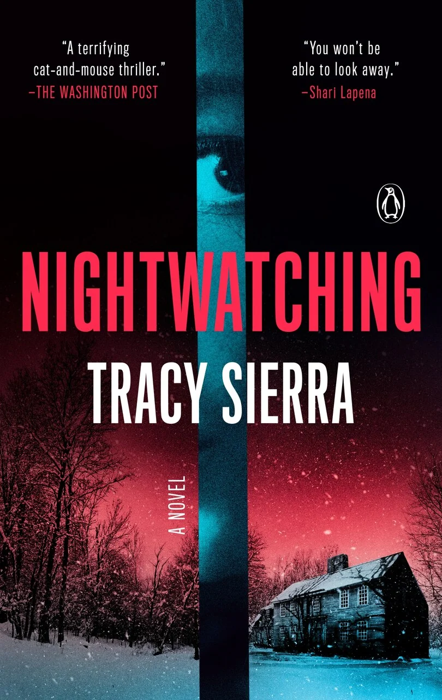

Nightwatching
Autrice : Tracy Sierra
Genre: Thriller psychologique
Année de publication: 2024
Langue: Anglais et Français (titre VF : L’intrus)

Sommaire
Une mère entends des bruits dans l’escalier chez elle en pleine nuit. Elle est seule avec ses deux enfants, son mari étant décédé. Elle aperçoit un inconnu portant des gants qui se dirige vers l’étage ou toutes les chambres sont.
Sans faire de bruit, elle réveille ses enfants et les entraîne, via des couloirs et des cages d’escaliers secondaires, vers une petite cachette secrète derrière une cheminée. L’intru parcourt la maison en cherchant, en les appelant, en leur faisant des promesses... puis des menaces. La mère réalise avec horreur que c’est le « corner man », l’homme dont sa fille disait avoir peur et qui était dans sa chambre la nuit.
Pour sauver ses enfants, la mère fini par sortir de la cachette en laissant les enfants et leur dit de ne JAMAIS ouvrir la porte de la cachette, sauf si c’est elle qui les appelles. Elle cours vers ses voisins les plus proches, seule, dans une tempête de neige et appellent la police, mais lorsque la police arrive sur place... Rien.
Aucune trace d’un intru n’est trouvée, la police commence à douter du récit et plus elle insiste, plus ils semblent convaincus qu’elle traverse une crise psychotique.
Critique
Un autre roman que j’ai terminé en une seule journée. J’ai trouvé révoltant qu’on ne croit pas quelqu’un qui est en panique, car les préjugés et le refus d’écouter une victime peut être très dangereux... pour tout le monde.
La mère fini par faire sa propre enquête, car personne ne le fera si ce n’est d’elle, et ce qu’elle trouve est troublant.
Moment favori
Les palpitations cardiaques que ce roman m’a donné... ! Je criais sur la dame, comme si elle pouvais m’entendre lui dire « COURS PLUS VITE! »
Moment moins fort
Le fait que personne ne la prend au sérieux, quand c’est elle qui a raison.
Les enfants aussi ont entendu un intru, mais ils ne sont pas non plus pris au sérieux!